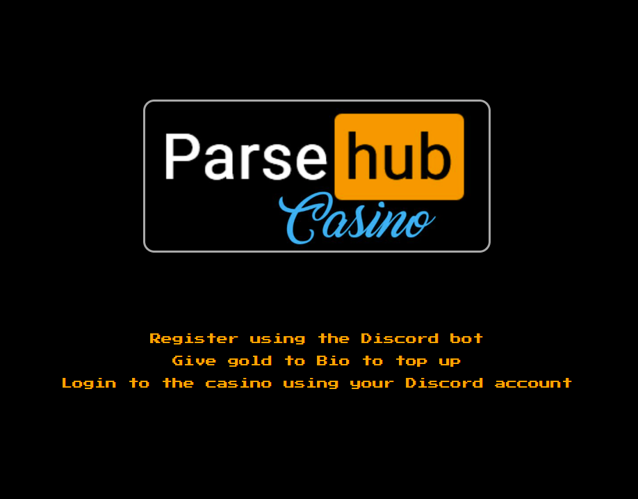
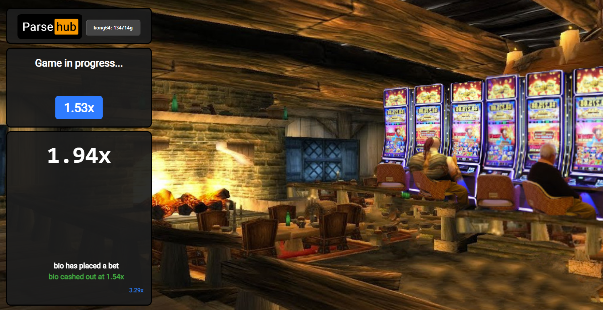

My WoW guild love the in-game gambling addon, so I thought it could be fun for my first real project to create an Aviator-style gambling game I could manage using a Discord bot. This was the first Flask app I built — I specifically wanted to use Discord OAuth2 for login, SQLite to store credit balances, and have the whole thing run off slash commands.
I used NumPy's probabilistic distribution to generate a crash multiplier centred at 1.3x, which seemed like the sweet spot — until everyone got bored playing for fake coins, so I jacked it up to 5–6x for some properly dramatic rounds. Players register with /register, authenticate via their Discord account, and place bets during the open window. Cash out before the crash and you get your bet back multiplied by whatever the number reads at that moment. This is riddled with design flaws, UI bugs, and at least one glaring security issue (can a user run their own bot instance and write to the centralised database? probably), but it was a really fun first crack at tying a web app to a chat platform, and the guys seemed to enjoy it. Hosted on my VPS, which has since become the place I keep most of my projects and sites. check it out
